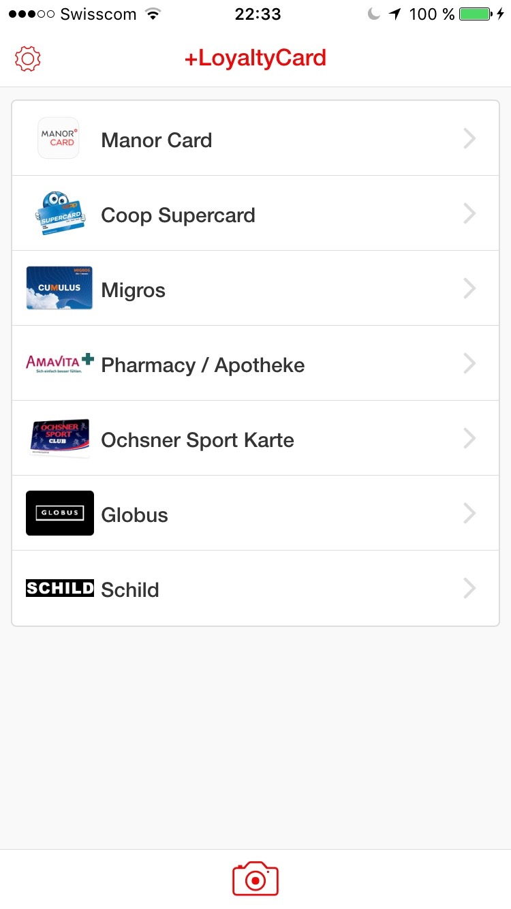
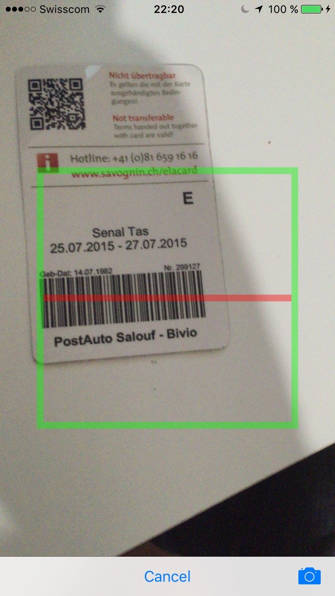
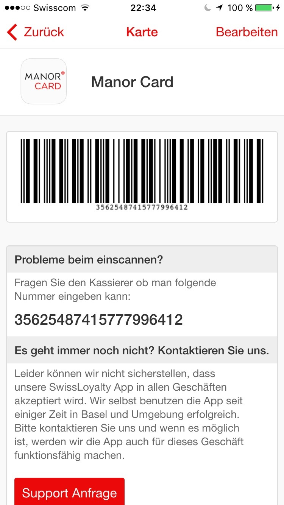

Nicht alle Geschäfte unterstützen Passbook oder ähnliches.
Scannen Sie einfach Ihre Kundenkarten oder Mitgliedsausweise ein und schon können Sie diese an der Kasse vorzeigen bzw. am Self-Checkout (wie zum Beispiel Subito oder Passabene) verwenden.
Alle Kundenkarten und Mitgliedsausweise an einem Ort und immer dabei :-)
Sie müssen sich zu keinem Zeitpunkt mit irgendwelchen PIN's anmelden oder registrieren, um diese App zu verwenden. Wir senden Ihnen keine Werbung, Rabatt Codes oder sonstiges zu.
Sie können verschiedene Barcodes einscannen und lokal abspeichern. Sollte Ihre Karte nicht aufgelistet sein, können Sie diese dennoch erfassen und benutzen.
Wir selbst verwenden diese App erfolgreich im Raum Basel und wurden noch nie abgelehnt. Deswegen dachten wir uns, es könnte für die Allgemeinheit auch von Interesse sein.
Soon in the Apple App-StoreSupport Anfrage stellen

 